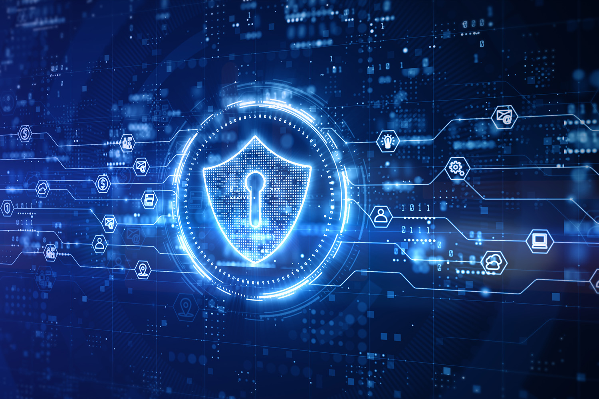

¿Qué es la Ciberseguridad?
La ciberseguridad es el conjunto de prácticas, técnicas y medidas destinadas a proteger los sistemas informáticos y la información digital contra ataques, daños o accesos no autorizados.
Importancia de la Ciberseguridad
Hoy en día, cualquier organización, empresa o usuario individual es susceptible de sufrir ciberataques. La protección de datos personales, financieros e información sensible es vital.
Principales Amenazas
- Malware: Software malicioso diseñado para causar daño (virus, troyanos, ransomware).
- Phishing: Suplantación de identidad para robar información confidencial.
- Ataques DDoS: Saturación de un sistema para impedir su funcionamiento.
- Spyware: Programas que espían las actividades del usuario.
Buenas Prácticas de Seguridad
- Utilizar contraseñas seguras y cambiarlas periódicamente.
- Actualizar el software y sistemas operativos.
- Realizar copias de seguridad frecuentemente.
- Evitar redes Wi-Fi públicas inseguras.
- Usar antivirus y firewalls actualizados.
Tipos de Hackers
- White Hat: Hackers éticos que ayudan a mejorar la seguridad.
- Black Hat: Hackers maliciosos que buscan dañar o robar información.
- Grey Hat: Hackers que actúan sin permiso, pero sin intenciones maliciosas claras.
Herramientas de Ciberseguridad
| Herramienta | Función |
|---|
| Antivirus | Detecta y elimina malware. |
| Firewall | Controla el tráfico entrante y saliente de la red. |
| VPN | Protege la privacidad mediante redes privadas virtuales. |
| IDS/IPS | Detecta e impide intrusiones. |
Ejemplos de Ciberataques Famosos
- WannaCry: Ransomware que afectó a cientos de miles de computadoras en 2017.
- SolarWinds: Ataque a gran escala contra agencias gubernamentales de EE.UU. en 2020.
- Yahoo! Breach: Robo de datos de 3 mil millones de cuentas.
Imagen Representativa

Concepto de Ingeniería Social
La ingeniería social es la técnica mediante la cual los atacantes manipulan a las personas para obtener información confidencial.
Simulación de Ataque Phishing
De: soporte@banco.com
Asunto: Urgente - Verificación de cuenta
Estimado usuario:
Su cuenta ha sido suspendida. Haga clic en el siguiente enlace para reactivarla:
[Enlace malicioso]
Atentamente,
Equipo de Seguridad